Versió 1.8 · Instal·lació, configuració i ús, pas a pas
FOrdre prepara, a partir de la llista de materials d'una màquina, les caixes i safates a mida per imprimir en 3D (una per a cada pas de muntatge, amb un caixetí per a cada peça i les seves etiquetes) i després guia el taller: qui omple les caixes, qui munta, qui verifica i qui ho gestiona, fins a tenir la màquina acabada i un informe de tot el que s'ha fet.
Aquest manual segueix un exemple real de principi a fi: la Dosificadora DX-1, que ve inclosa amb FOrdre, i un taller amb quatre persones: la Rosa (Responsable), en Marc (Magatzem), l'Anna (Muntadora) i en Pau (Qualitat).
| Eina | On es fa servir | Per a què serveix |
|---|---|---|
Configurador (index.html) | Ordinador | Importar la llista de materials, veure les caixes en 3D, i descarregar els STL per imprimir, les etiquetes i el full de ruta. |
App del taller (muntatge.html) | Mòbil o tauleta | Cada persona hi entra amb el seu rol: omplir caixes, muntar, verificar, gestionar ordres i veure resultats. |
Servidor del taller (servidor/) | Raspberry Pi o PC | Comparteix-ho tot en temps real entre els aparells, guarda les persones i les ordres, i comprova les regles. |
Les tres eines funcionen sense internet. El servidor és opcional: sense servidor, cada aparell treballa sol.
| Paraula | Què vol dir |
|---|---|
| Projecte | Una màquina: el seu arbre de muntatge, els materials i la configuració de les caixes. Es desa en un fitxer .fordre.json. |
| Conjunt | Una part de la màquina que es munta en un pas (per exemple, Grup motor). Pot tenir subconjunts: és l'arbre de muntatge. |
| Material | Cada peça diferent: una placa, un cargol, un motor, un tub de cola… |
| Caixetí | El forat a mida on va un material. Mai no hi ha dos materials al mateix caixetí. |
| Safata / caixa / contenidor | On van els caixetins. Una safata té molts caixetins; una caixa és per a un sol material; un contenidor porta caixes a dins. |
| Kit | Totes les caixes d'un pas de muntatge. |
| Caixa de guarda | La caixa on es desa un subconjunt un cop muntat, per portar-lo al pas següent. |
| Ordre de fabricació | Una unitat concreta que es fabrica (per exemple, OF-2026-002, número de sèrie DX1-0042). Té el seu progrés, registre i informe. |
| Mancant | Material que no ha arribat (o no n'hi ha prou). |
| Peça defectuosa | Peça que ha arribat malament o que s'ha trencat en muntar. |
| Lot / número de sèrie | La identificació d'una peça concreta: el lot del proveïdor (moltes peces iguals fabricades juntes) o el número de sèrie (una peça única). FOrdre els anota per a la traçabilitat (ISO 9001). |
| Per a… | Necessites |
|---|---|
| El configurador | Un ordinador amb Chrome, Edge o Firefox (Windows, macOS o Linux). |
| L'app del taller | Mòbils o tauletes Android o iPhone/iPad amb el navegador. Una càmera per escanejar (opcional: també serveix un lector de codis USB o Bluetooth). |
| El servidor del taller (opcional) | Una Raspberry Pi 3, 4 o 5 (o qualsevol ordinador) amb Node.js 18 o superior, connectada a la xarxa del taller. |
| Imprimir les caixes | Una impressora 3D i el seu programa de laminat (PrusaSlicer, Cura, Bambu Studio, OrcaSlicer…). |
| Imprimir les etiquetes | Una impressora d'etiquetes (Brother, Dymo…), una impressora tèrmica de rotlle o fulls A4 adhesius. |
Hi ha tres maneres de fer servir FOrdre. Tria la que et convingui:
| Manera | Quan convé |
|---|---|
| A. Demo en línia | Per provar-ho ara mateix, sense instal·lar res. |
| B. Carpetes del ZIP, amb doble clic | Per a una sola persona o per preparar caixes, sense taller compartit. |
| C. Servidor del taller | Quan diverses persones treballen alhora amb mòbils i tauletes. És la manera completa. |
La demo desa les dades només al navegador que fas servir. Per treballar de debò amb un equip, fes servir el servidor del taller (opció C).
El fitxer FOrdre-eines-x.y.z.zip porta una carpeta per a cada eina:
FOrdre/
├── LLEGEIX-ME.txt
├── 1-configurador/ index.html → el configurador
├── 2-taller/ muntatge.html → l'app del taller
│ rol-magatzem.html, rol-muntador.html,
│ rol-qualitat.html, rol-responsable.html
├── 3-servidor/ la solució sencera, amb el servidor
└── 4-documentacio/ aquest manual, el README i les capturesDocuments\FOrdre).1-configurador/index.html.2-taller/muntatge.html, o directament a rol-magatzem.html (o al rol que vulguis).Limitacions quan s'obre amb doble clic:
1-configurador/exemples/..fordre.json (vegeu el punt 5.10).És la manera recomanada: la Raspberry Pi queda engegada al taller i tots els aparells s'hi connecten per la Wi-Fi.
Pas 1. Preparar la targeta SD
fordre (després s'hi podrà accedir com a fordre.local).taller i una contrasenya segura.Pas 2. Connectar-s'hi
Des d'un ordinador de la mateixa xarxa, obre un terminal (a Windows, PowerShell):
ssh taller@fordre.localSi no la troba pel nom, busca'n l'adreça IP al router (per exemple, 192.168.1.50) i fes ssh taller@192.168.1.50.
Pas 3. Instal·lar FOrdre
sudo apt update && sudo apt install -y git
git clone https://github.com/Bioquad/FOrdre.git
cd FOrdre
sudo bash servidor/configura-raspberry.shL'script:
fordre, que arrenca sol cada vegada que s'engega la Raspberry Pi;Si no tens el repositori, també pots copiar la carpeta 3-servidor del ZIP a la Raspberry Pi (amb una memòria USB o amb scp) i executar-hi el mateix sudo bash servidor/configura-raspberry.sh.
Pas 4. Comprovar que funciona
sudo systemctl status fordre # ha de dir «active (running)»
journalctl -u fordre -f # mostra el registre i el QR (Ctrl+C per sortir)Al registre hi veuràs una cosa així:
FOrdre · servidor del taller 1.8.0
────────────────────────────────────
Dades: /home/taller/FOrdre/servidor/dades
App taller: https://192.168.1.50:8443/muntatge.html (per rol: …/muntatge.html?rol=magatzem · muntador · qualitat · responsable)
Configurador: https://192.168.1.50:8443/index.html
Nom de xarxa: https://fordre.local:8443/muntatge.html
Primer cop: http://192.168.1.50:8080/ (certificat i ajuda)
Primer ús: obre l'app del taller i crea el primer Responsable.
Escaneja aquest QR amb el mòbil (mateixa Wi-Fi):Pas 5. Donar-li una IP fixa (molt recomanable)
El servidor fa un certificat de seguretat per a la seva adreça. Si la Raspberry Pi canvia d'IP, el certificat es refà i caldrà tornar-lo a instal·lar a cada mòbil. Per evitar-ho:
https://fordre.local:8443.Ordres útils
| Què vols fer | Ordre |
|---|---|
| Veure el registre i el QR | journalctl -u fordre -f |
| Aturar el servidor | sudo systemctl stop fordre |
| Tornar-lo a engegar | sudo systemctl restart fordre |
| Actualitzar FOrdre | cd ~/FOrdre && git pull && sudo systemctl restart fordre |
| Canviar els ports | FORDRE_PORT=9443 FORDRE_PORT_HTTP=9080 sudo -E bash servidor/configura-raspberry.sh |
| Posar una clau de xarxa | FORDRE_CLAU=4821 sudo -E bash servidor/configura-raspberry.sh |
FOrdre\3-servidor\servidor.inicia-windows.bat. S'obre una finestra amb les adreces i el QR.Perquè arrenqui sol en engegar l'ordinador: prem Win + R, escriu shell:startup i posa-hi una drecera a inicia-windows.bat.
Configura l'ordinador perquè no entri en repòs: si s'adorm, els mòbils perden la connexió (continuen treballant i ho enviaran en tornar, però no es veurà en temps real).
cd FOrdre/3-servidor # o la carpeta del repositori
bash servidor/inicia.sh # Ctrl+C per aturar-loA Linux amb systemd (Debian, Ubuntu…) també pots fer servir sudo bash servidor/configura-raspberry.sh perquè quedi com a servei.
L'escàner de la càmera només funciona en connexions segures (https). El servidor fa servir un certificat propi, i cada aparell l'ha d'acceptar una vegada.
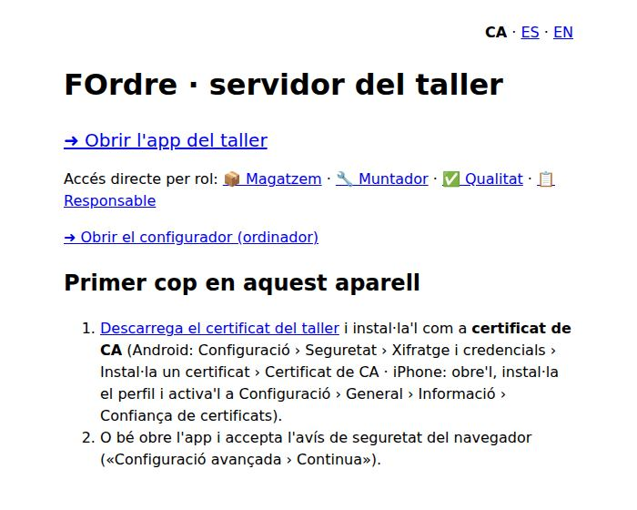
http://<adreça-del-servidor>:8080 (per exemple, http://192.168.1.50:8080). S'obre la pàgina d'ajuda.fordre-taller.crt.node servidor/fordre-servidor.js [--port 8443] [--port-http 8080] [--dades carpeta] [--clau PIN] [--nou-certificat]| Opció | Variable d'entorn | Per defecte | Què fa |
|---|---|---|---|
--port | FORDRE_PORT | 8443 | Port segur (https) de les apps. |
--port-http | FORDRE_PORT_HTTP | 8080 | Port de la pàgina d'ajuda i del certificat. |
--dades | FORDRE_DADES | servidor/dades | Carpeta on es guarda tot. |
--clau | FORDRE_CLAU | (cap) | Clau de xarxa: una barrera addicional abans del PIN de cada persona. Cal escriure-la al menú ⋮ de l'app. |
--nou-certificat | — | — | Força a fer un certificat nou. |
Exemple: un servidor amb una clau de xarxa i les dades en un disc USB:
node servidor/fordre-servidor.js --clau 4821 --dades /media/usb/fordre-dadesTot el que fa el taller es guarda a servidor/dades/:
dades/
├── projectes/ un fitxer per projecte publicat
├── ordres/ les ordres de cada projecte
├── progres/ el progrés de cada ordre (amb una còpia .bak de l'estat anterior)
├── fotos/ les fotos, per projecte i ordre
├── persones.json persones, rols i resum dels PIN (mai el PIN en clar)
└── certificat/ el certificat https del servidorFer una còpia de seguretat (a la Raspberry Pi, amb una memòria USB muntada a /media/usb):
sudo systemctl stop fordre
cp -r ~/FOrdre/servidor/dades /media/usb/fordre-dades-$(date +%Y%m%d)
sudo systemctl start fordreA Windows, tanca la finestra del servidor i copia la carpeta servidor\dades on vulguis.
Restaurar-la: atura el servidor, substitueix la carpeta dades per la còpia i torna'l a engegar.
Actualitzar FOrdre: git pull i reiniciar el servidor (vegeu el punt 2.4). Les dades no es toquen.
Prem ⚙ Configuració a la barra de dalt del configurador. Els canvis s'apliquen a l'instant i es veuen a la vista 3D. El botó Valors per defecte ho torna tot com al principi.
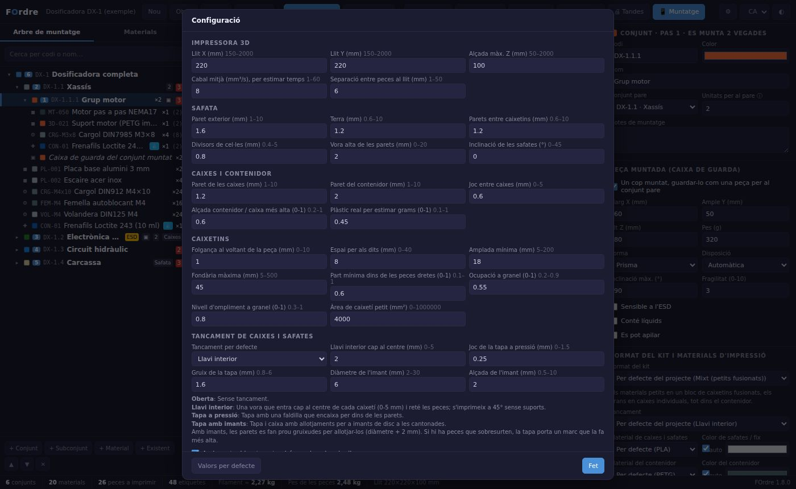
Impressora 3D
| Camp | Per defecte | Límits | Quan canviar-lo |
|---|---|---|---|
| Llit X / Llit Y (mm) | 220 × 220 | 150–2000 | Posa-hi la mida útil del llit de la teva impressora. Les safates no el superaran mai. |
| Alçada màx. Z (mm) | 100 | 50–2000 | Alçada màxima que vols imprimir. |
| Cabal mitjà (mm³/s) | 8 | 1–60 | Per estimar les hores d'impressió de cada tanda. |
| Separació entre peces al llit (mm) | 6 | 1–50 | Distància entre peces a les tandes d'impressió. |
Safata
| Camp | Per defecte | Límits | Notes |
|---|---|---|---|
| Paret exterior (mm) | 1,6 | 1–10 | Més gruix, més resistència i més filament. |
| Terra (mm) | 1,2 | 0,6–10 | |
| Parets entre caixetins (mm) | 1,2 | 0,6–10 | |
| Divisors de cel·les (mm) | 0,8 | 0,4–5 | Separen les unitats en disposició individual. |
| Vora alta de les parets (mm) | 2 | 0–20 | Evita que les peces rodolin en moure la safata. |
| Inclinació de les safates (°) | 0 | 0–45 | Safates inclinades sobre una falca. Es limita sola si hi ha peces que no es poden tombar. |
Caixes i contenidor
| Camp | Per defecte | Límits |
|---|---|---|
| Paret de les caixes (mm) | 1,2 | 1–10 |
| Paret del contenidor (mm) | 2 | 1–10 |
| Joc entre caixes (mm) | 0,6 | 0–5 |
| Alçada del contenidor respecte la caixa més alta (0–1) | 0,6 | 0,2–1 |
| Plàstic real per estimar grams (0–1) | 0,45 | 0,1–1 |
Caixetins
| Camp | Per defecte | Límits | Notes |
|---|---|---|---|
| Folgança al voltant de la peça (mm) | 1 | 0–10 | Joc perquè la peça entri i surti bé. |
| Espai per als dits (mm) | 8 | 0–40 | Espai per agafar les peces. |
| Amplada mínima (mm) | 18 | 5–200 | Hi ha de cabre un dit. |
| Fondària màxima (mm) | 45 | 5–500 | |
| Part mínima dins de les peces dretes (0–1) | 0,6 | 0,1–1 | Peces que van dretes (líquids): quina part queda dins. |
| Ocupació a granel (0–1) | 0,55 | 0,2–0,9 | Quant ocupa el material amuntegat. |
| Nivell d'ompliment a granel (0–1) | 0,8 | 0,3–1 | Fins on s'omple (no fins dalt de tot). |
| Àrea de caixetí petit (mm²) | 4000 | — | Per sota, el caixetí és petit (important per al format mixt). |
Tancament de caixes i safates
| Camp | Per defecte | Notes |
|---|---|---|
| Tancament per defecte | Llavi interior | Oberta, Llavi interior, Tapa a pressió o Tapa amb imants (vegeu el punt 3.3). |
| Llavi interior cap al centre (mm) | 2 | 0–5. S'imprimeix a 45°, sense suports. |
| Joc de la tapa a pressió (mm) | 0,25 | Es calibra amb la peça de calibratge. |
| Gruix de la tapa (mm) | 1,6 | |
| Diàmetre i alçada de l'imant (mm) | 6 × 2 | Els imants de disc que tinguis. |
| Tapa també a cada caixa de dins | Sí | Amb contenidor. |
| Contenidors apilables | Sí | Tots amb la mateixa planta i un peu que encaixa al de sota. |
| Nanses als costats curts | Sí | |
| QR gravat a les tapes | Sí | Es llegeix millor si el repasses amb un retolador. |
Identificació i ergonomia
Format dels kits i materials d'impressió
| Camp | Per defecte |
|---|---|
| Format per defecte | Mixt (petits fusionats) |
| Material de caixes i safates | PLA |
| Material per a peces ESD | PETG-ESD (antiestàtic) |
| Material del contenidor | PETG |
| Color de les caixes individuals | El del material (també: el del conjunt, per tipus, o un color fix) |
| Color fix / safates, color del contenidor | Gris clar / gris blavós |
Materials d'impressió disponibles: PLA, PETG, ABS, ASA, PC, PA (niló), PP, TPU (flexible), PETG-ESD (antiestàtic) i PLA amb fibra de carboni. Les caixes de peces sensibles a l'ESD es fan soles amb el material antiestàtic.
Exemple. Una impressora amb un llit de 250 × 210 mm, caixes de PETG, tapes amb imants de 8 × 3 mm i etiquetes de cinta de 12 mm: Llit X 250, Llit Y 210, Material de caixes PETG, Tancament Tapa amb imants, Diàmetre de l'imant 8, Alçada de l'imant 3, Etiquetes Cinta 12 mm.
Cada impressora imprimeix una mica diferent. La peça de calibratge ajusta les tapes i els encaixos a la teva.
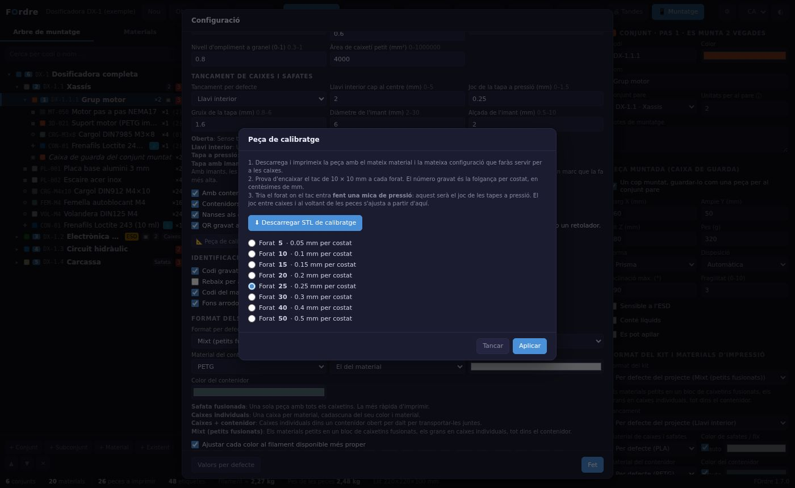
Formats del kit (per a tot el projecte o per a cada conjunt):
| Format | Com és | Quan triar-lo |
|---|---|---|
| Safata fusionada | Una sola peça amb tots els caixetins. | La més ràpida d'imprimir. Kits petits. |
| Caixes individuals | Una caixa per material, cadascuna del seu color i material. | Quan els materials es reposen per separat. |
| Caixes + contenidor | Les caixes individuals dins un contenidor obert per dalt, amb osques per agafar-les. | Per portar tot el kit alhora. |
| Mixt (recomanat) | Els materials petits en un bloc de caixetins fusionats, els grans en caixes individuals, tot dins el contenidor. | El millor equilibri. |
Tancaments:
| Tancament | Com és | Quan triar-lo |
|---|---|---|
| Oberta | Sense tancament. | Safates que no es mouen. |
| Llavi interior (0–5 mm) | Una vora que entra cap al centre de cada caixetí i reté les peces. | Per defecte: no cal imprimir tapa. |
| Tapa a pressió | Tapa amb una faldilla que encaixa per dins. | Per transportar. Calibra el joc (punt 3.2). |
| Tapa amb imants | Imants de disc a les cantonades de la caixa i de la tapa. | S'obre i es tanca molt de pressa. Les parets es fan més gruixudes per allotjar-los. |
El format es tria a ⚙ Configuració › Etiquetes (o a la fitxa de qualsevol material, a l'apartat Etiqueta) i s'aplica a tot el projecte. Amb A mida… s'hi escriuen l'amplada i l'alçada.
| Format | Mida | Impressora |
|---|---|---|
| Cinta 9 / 12 / 18 / 24 mm | Llargada automàtica | Brother P-touch, Dymo, cintes laminades |
| Rotlle tèrmic | 62 × 29, 50 × 25 o 40 × 20 mm | Impressores tèrmiques d'etiquetes |
| Full A4 | 70 × 37 (3 × 8), 48,5 × 25,4 (4 × 11), 38 × 21,2 (5 × 13), 25,4 × 10 (7 × 27) | Impressora normal amb fulls adhesius |
| A mida | La que vulguis | — |
Cada etiqueta porta el codi, el nom, la quantitat, el pas, el conjunt, els colors, un QR i un codi de barres (Code 128). L'etiqueta s'adapta a l'amplada del caixetí: si és molt estret, s'hi treu el QR. Els textos de l'etiqueta surten en l'idioma del configurador. En imprimir, tria escala 100 % (sense «ajustar a la pàgina»).
Primer ús. La primera vegada que s'obre l'app amb el servidor, demana crear el Responsable:
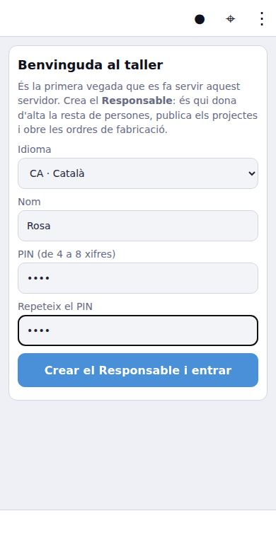
1111, que després canviaràs per un de segur).Si el servidor encara no té cap projecte, l'app ho diu. El Responsable el publica des del configurador (punt 5.10), o pot tocar Projecte d'exemple per provar-ho: si entra com a Responsable, l'exemple es publica sol al servidor.
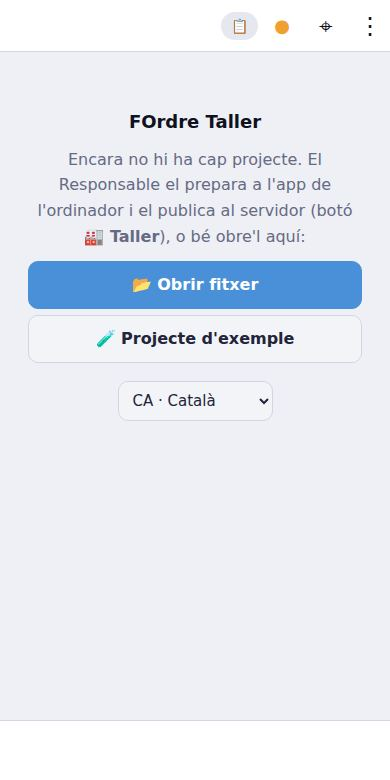
Donar d'alta la resta de persones. Com a Responsable: 📋 Tauler › 👥 Persones.
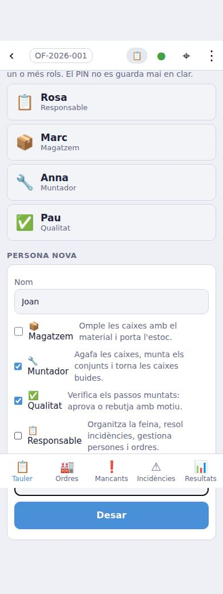
A l'exemple:
| Persona | Rols | PIN d'exemple |
|---|---|---|
| Rosa | Responsable | 1111 |
| Marc | Magatzem | 2222 |
| Anna | Muntador | 3333 |
| Pau | Qualitat | 4444 |
| Joan | Muntador i Qualitat | 5555 |
Què pot fer cada rol:
| Rol | Pot fer |
|---|---|
| 📦 Magatzem | Omplir i buidar caixes, marcar mancants i peces defectuoses, estoc, tornar caixes. |
| 🔧 Muntador | Agafar caixes, començar i marcar passos com a muntats (també amb mancants), completar-los, registrar peces trencades, tornar caixes. |
| ✅ Qualitat | Verificar (aprovar o rebutjar), decidir què es fa amb les peces defectuoses, registrar-ne, resoldre incidències. |
| 📋 Responsable | Tot l'anterior, i a més publicar projectes, obrir i tancar ordres, assignar passos i gestionar persones. |
Tothom pot obrir incidències, fer fotos i consultar el registre i els resultats.
Regla dels quatre ulls. Qui ha muntat un pas no el pot verificar. En Joan, que té els dos rols, pot verificar el que munta l'Anna, però no el que munta ell mateix. El Responsable no té aquesta limitació.
Canviar un PIN o els rols: Persones › toca la persona › canvia el que calgui › Desar. Si deixes el PIN buit, no es canvia.
Donar de baixa algú: Persones › toca la persona › Donar de baixa. Ja no podrà entrar i es tanquen les seves sessions. El registre del que va fer es conserva. El taller no deixa donar de baixa l'últim Responsable.
Si un aparell sempre el fa servir la mateixa feina (la tauleta del magatzem, la de la línia de muntatge…), fes-li un accés directe al seu rol:
| Rol | Adreça |
|---|---|
| 📦 Magatzem | https://<servidor>:8443/muntatge.html?rol=magatzem |
| 🔧 Muntador | https://<servidor>:8443/muntatge.html?rol=muntador |
| ✅ Qualitat | https://<servidor>:8443/muntatge.html?rol=qualitat |
| 📋 Responsable | https://<servidor>:8443/muntatge.html?rol=responsable |
Obre l'adreça i desa-la a la pantalla d'inici. La pàgina d'ajuda del servidor (http://<servidor>:8080) té els quatre enllaços. Amb l'app instal·lada, si mantens premuda la icona, també surten les dreceres dels rols. Si la persona que entra no té aquell rol, l'app l'avisa i fa servir el seu.
A la carpeta 2-taller del ZIP hi ha els mateixos accessos en fitxers: rol-magatzem.html, rol-muntador.html, rol-qualitat.html i rol-responsable.html.
FOrdre es pot fer servir en català, castellà i anglès. On es tria:
| Eina | On |
|---|---|
| Configurador | Selector CA / ES / EN a la barra de dalt, al costat de ◐. |
| App del taller | Menú ⋮ › Idioma, o a sota de la llista de persones de la pantalla d'entrada. |
| Pàgina d'ajuda del servidor | Surt en l'idioma del navegador. A dalt hi ha els enllaços CA · ES · EN. |
?lang=ca, ?lang=es o ?lang=en. Per exemple, la tauleta del magatzem en castellà: https://<servidor>:8443/muntatge.html?rol=magatzem&lang=es.FOrdre llegeix dos tipus de llista, en Excel (.xlsx, .xls, .ods) o CSV (.csv, separat per ;, , o tabulador). Les columnes es reconeixen en català, castellà i anglès, i abans d'importar es poden corregir.
Descarrega la plantilla amb el botó Plantilla CSV del configurador (o obre exemples/plantilla_fordre.csv). Cada fila és un material dins d'un conjunt. Una fila amb conjunt però sense codi de material defineix el conjunt mateix.
| Columna | Obligatòria | Què hi va | Exemple |
|---|---|---|---|
conjunt | Sí | Codi del conjunt on es munta el material. | XAS |
nom conjunt | — | Nom del conjunt. | Xassís |
pare | — | Codi del conjunt on es munta aquest conjunt (buit si és la màquina). | MAQ |
codi | Sí* | Codi del material. *Buit en una fila de conjunt. | PL-001 |
nom | — | Nom del material. | Placa base alumini |
quantitat | Sí | Quantes en porta cada unitat del conjunt. A una fila de conjunt: quantes unitats en necessita el pare. | 2 |
x, y, z | Recomanat | Mides de la peça, en mm (llarg, ample, alt). | 180, 120, 3 |
pes | — | Pes d'una unitat, en g. | 175 |
tipus | — | peca, cargol (cargoleria i petit material), consumible o subconjunt. | peca |
forma | — | box (prisma) o cylinder (cilindre). | box |
esd | — | Sensible a l'electricitat estàtica: 1/0 (també sí/no). | 0 |
liquid | — | Conté líquids: 1/0. Anirà dreta. | 1 |
angle max | — | Inclinació màxima en graus (90 = es pot tombar del tot). | 30 |
apilable | — | Es pot apilar: 1/0. | 1 |
max apilat | — | Quantes unitats es poden apilar. | 5 |
fragil | — | Fragilitat de 0 a 10. | 7 |
disposicio | — | auto, individual, apilat, capa o granel. | granel |
color | — | Color del material o del conjunt, en #RRGGBB. | #9AA5B1 |
origen | — | propi (disseny propi) o comprat. | comprat |
proveidor | — | Proveïdor o referència. Agrupa la llista de compra i les devolucions. | Würth |
notes | — | Notes lliures. | |
parell | — | Parell de collada en N·m. Surt al pas de muntatge. | 2.5 |
nota | — | Nota de muntatge d'aquest element. | En creu |
instruccions | — | (Fila de conjunt) passos de muntatge, separats per |. | Presentar les plaques | Muntar els escaires | Collar en creu |
eines | — | (Fila de conjunt) eines necessàries. | Clau Allen 3 mm, clau dinamomètrica |
tancament | — | (Fila de conjunt) cap, llavi, pressio o imants. | imants |
format kit | — | (Fila de conjunt) fusionat, individual, contenidor o mixt. | contenidor |
material caixa | — | Material d'impressió de la caixa d'aquest material. | PETG |
color caixa | — | Color de la caixa d'aquest material. | #FDD835 |
tracabilitat | — | Què s'ha d'anotar de cada peça: lot, serie (número de sèrie) o buit (no cal). Vegeu el punt 6.11. | serie |
Exemple complet (és la plantilla, llegida com a taula):
| conjunt | nom conjunt | pare | codi | nom | quantitat | x | y | z | tipus | disposicio | parell | instruccions |
|---|---|---|---|---|---|---|---|---|---|---|---|---|
| MAQ | Màquina completa | 1 | Muntatge final | Prova de funcionament | |||||||||
| XAS | Xassís | MAQ | PL-001 | Placa base alumini | 2 | 180 | 120 | 3 | peca | auto | ||
| XAS | Xassís | MAQ | CRG-M4x10 | Cargol DIN912 M4x10 | 24 | 10 | 7 | 7 | cargol | granel | 2.5 | |
| XAS | Xassís | MAQ | CON-01 | Frenafils 243 | 1 | 25 | 25 | 75 | consumible | individual | ||
| MOT | Grup motor | XAS | 2 | 60 | 50 | 80 | Encarar el motor | Collar els 4 cargols | |||||
| MOT | Grup motor | XAS | MT-050 | Motor NEMA17 | 1 | 42 | 42 | 48 | peca | auto | ||
| ELE | Electrònica | MAQ | PCB-100 | Placa de control | 1 | 100 | 70 | 18 | peca | individual |
Es llegeix així: la màquina (MAQ) té un xassís (XAS) i una electrònica (ELE). El xassís porta 2 plaques, 24 cargols i un frenafils, i també 2 grups motor (MOT), que es munten abans i es guarden en una caixa de guarda de 60 × 50 × 80 mm.
Exporta la llista de materials amb nivells (indentada) del teu programa: FreeCAD, Fusion 360, SolidWorks, Inventor, Onshape… Cal que tingui:
1, 2, 3, o bé 1, 1.1, 1.1.2, o el nom sagnat);Si porta mides (Length, Width, Height) i pes (Mass), millor. Exemple (exemples/bom_cad_solidworks.csv):
Item No.,Part Number,Description,QTY.,Length (mm),Width (mm),Height (mm),Mass (g)
1,ASM-100,Base assembly,1,300,200,80,2400
1.1,PL-10,Base plate,1,180,150,5,900
1.2,SUB-20,Bracket subassembly,2,50,40,30,120
1.2.1,BR-1,Bracket,1,50,40,3,40Les files que tenen fills es converteixen en conjunts. Si porten mides, són la peça muntada, i tindran caixa de guarda.
Consells per exportar:
Quan un subconjunt es munta abans i s'ha de portar al conjunt pare, dona-li les mides de la peça acabada (a la fila del conjunt, o a la fitxa Peça muntada). FOrdre:
| Problema | Solució |
|---|---|
| Un material surt amb mides 0 i un caixetí petit. | Omple x, y i z. Sense mides, FOrdre no sap quant espai necessita. |
| Els cargols ocupen massa. | Posa disposicio = granel i tipus = cargol. |
| Una ampolla surt estirada. | Posa liquid = 1 i angle max baix: anirà dreta. |
| La BOM no fa conjunts. | Revisa que la columna de nivell estigui ben assignada al diàleg d'importació. |
| Les unitats surten molt grans o molt petites. | Tria les Unitats de mida (mm, cm, m o polzades) i de pes (g, kg o lb) al diàleg. |
| Instruccions en una sola línia. | Separa els passos amb |. |
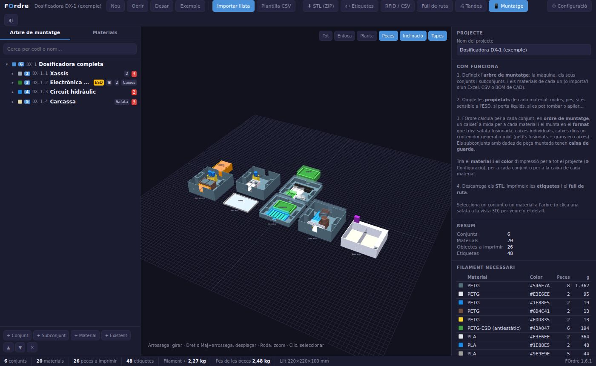
La pantalla té tres parts:
A la barra de dalt hi ha: Nou, Obrir, Desar, Exemple, Importar llista, Plantilla CSV, ⬇ STL (ZIP), 🏷 Etiquetes, RFID / CSV, Full de ruta, 🖨 Tandes, 📱 Muntatge, 🏭 Taller (només amb el servidor), ⚙ Configuració (en pantalles justes, només la icona ⚙), el selector d'idioma CA / ES / EN i ◐ (tema clar o fosc).
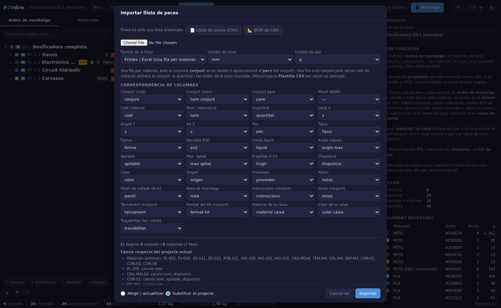
Amb una BOM de CAD, el diàleg reconeix la columna de nivell:
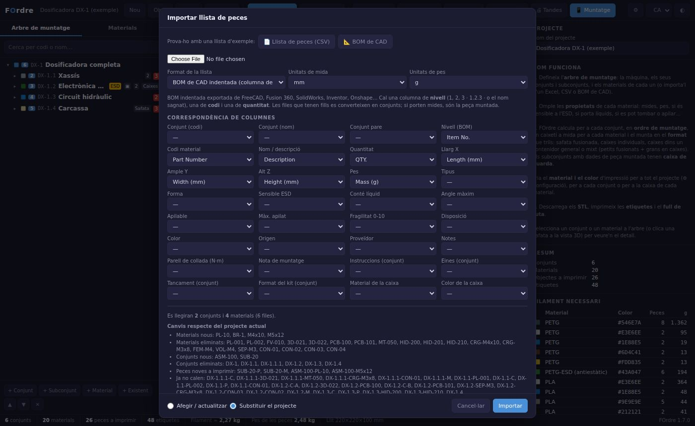
Després d'importar, FOrdre calcula les caixes i les mostra en 3D. Toca un conjunt a l'arbre i se'n ressalten les caixes.
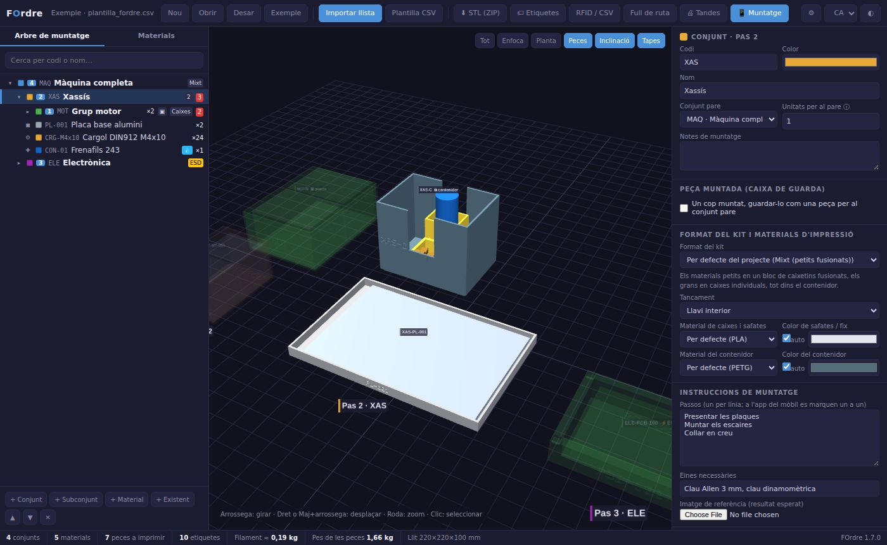
Controls de la vista 3D:
| Acció | Com |
|---|---|
| Girar | Arrossega amb el botó esquerre. |
| Desplaçar | Arrossega amb el botó dret, o amb Maj + botó esquerre. |
| Zoom | Roda del ratolí. |
| Seleccionar | Clic sobre una caixa. |
| Veure-ho tot / enfocar la selecció | Botons Tot i Enfoca, o tecles Inici i F. |
| Vista des de dalt | Botó Planta. |
| Mostrar o amagar les peces, la inclinació o les tapes | Botons Peces, Inclinació i Tapes. |
Marques a l'arbre: el número blau és el pas de muntatge; ESD indica peces sensibles a l'estàtica; ▣ vol dir que té caixa de guarda; Caixes o Safata indiquen el format; el número vermell són els avisos.
Toca un material a l'arbre (dins del seu conjunt) o a la pestanya Materials.
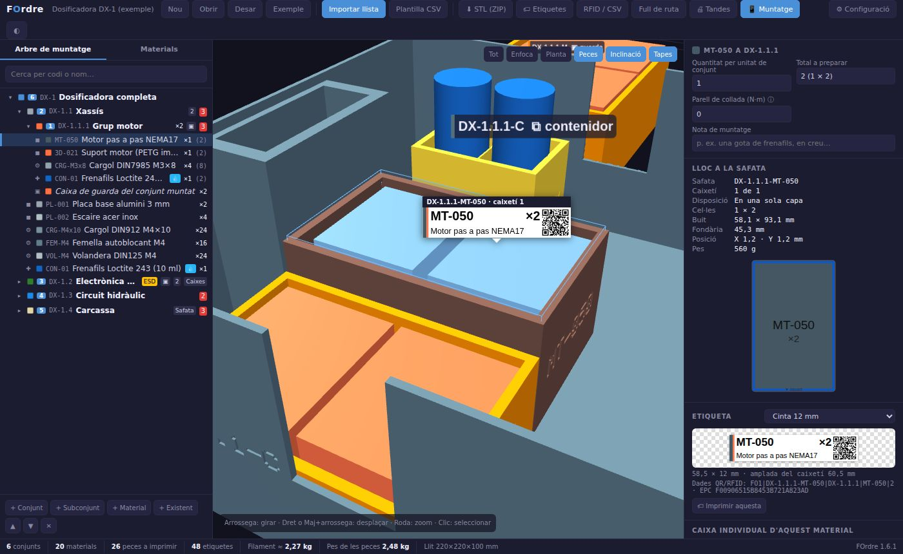
La fitxa té aquestes parts:
Exemple: el motor NEMA17 (MT-050) va en una sola capa, amb 2 cel·les (una per a cada grup motor), dins del contenidor DX-1.1.1-C.
Toca un conjunt a l'arbre.
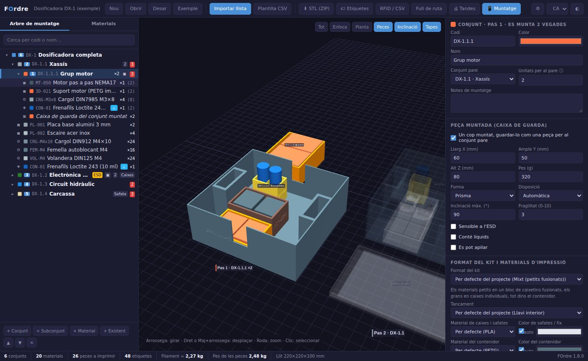
Amb els botons + Conjunt, + Subconjunt, + Material, + Existent (un material que ja hi és), ▲ ▼ (moure) i ✕ (eliminar) es pot editar l'arbre a mà.
La pestanya Materials mostra tots els materials de la màquina amb el total de cada un. Des d'aquí es poden editar i exportar en CSV.
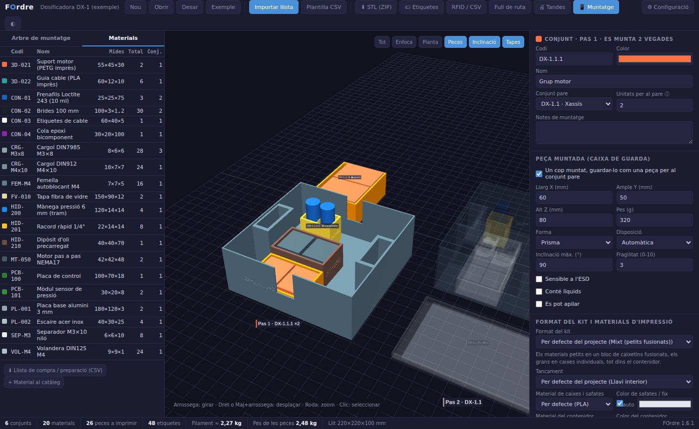
Les caixes (STL i 3MF)
LLEGEIX-ME.txt amb el filament necessari. El nom de cada fitxer porta el pas, l'objecte, el material i el color, per exemple 01_DX-1.1.1-C_PETG_546E7A.stl.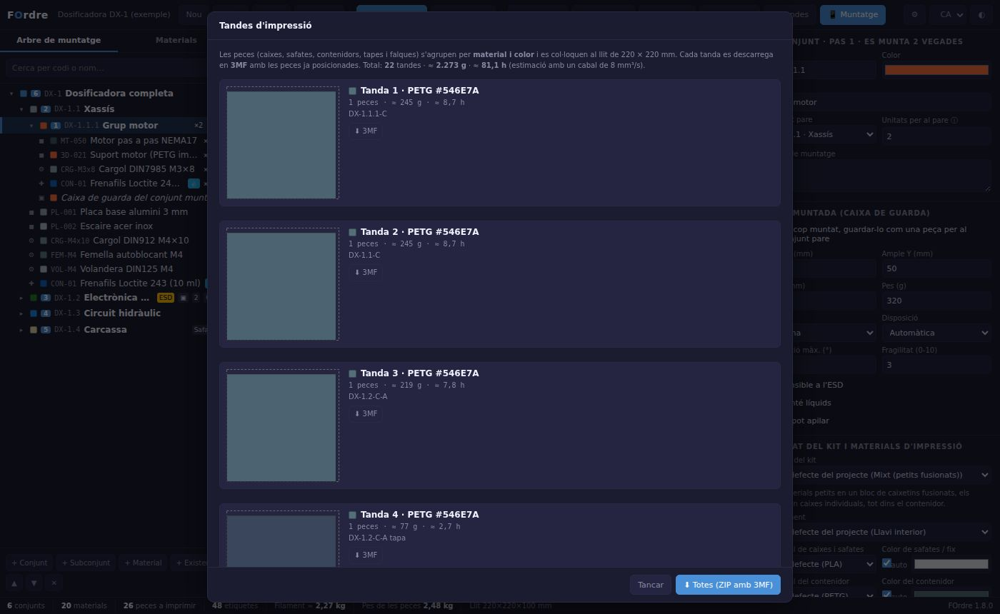
Consells d'impressió:
Les etiquetes
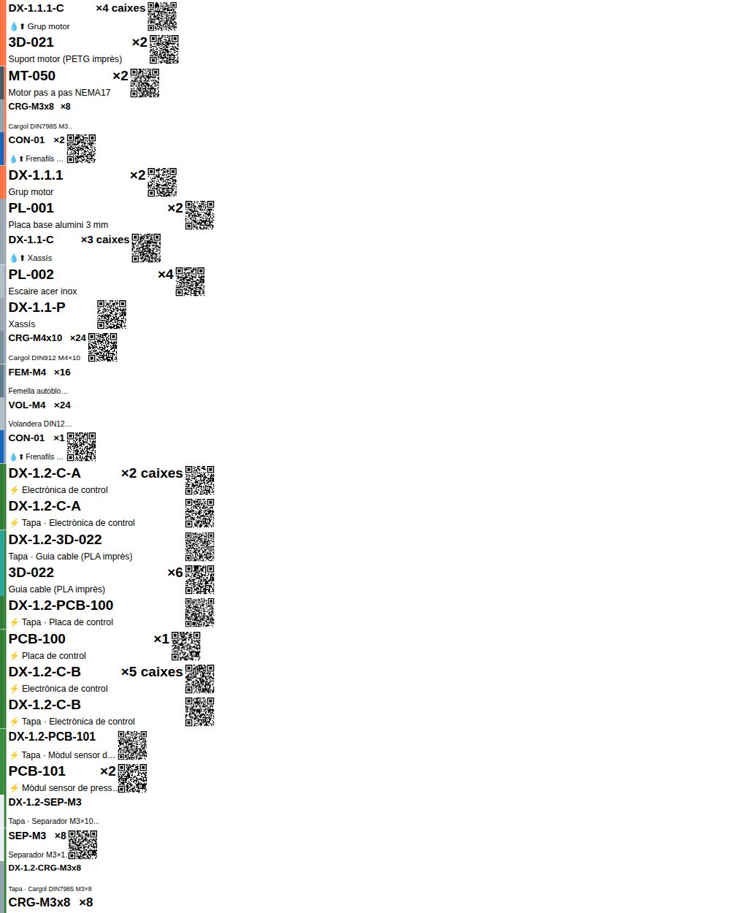
El full de ruta
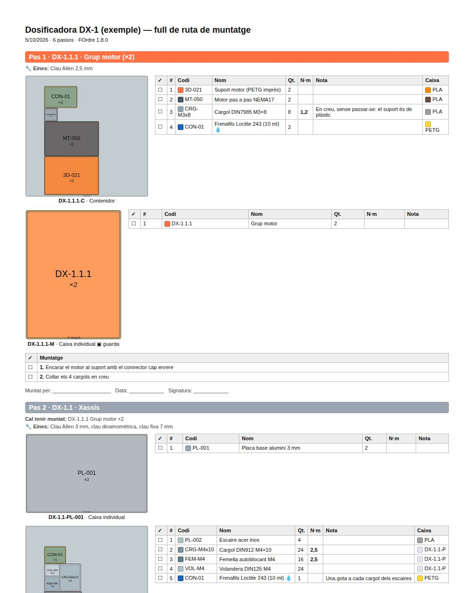
Torna a importar la llista (mode Afegir / actualitzar). Abans d'importar, FOrdre mostra què ha canviat (materials nous o eliminats, mides, quantitats) i quines caixes cal tornar a imprimir. Cada revisió queda a la fitxa del projecte, a Revisions de la llista de materials.
.fordre.json. Guarda'l amb la documentació de la màquina..fordre.json.Amb el servidor del taller (recomanat)
https://<servidor>:8443/index.html.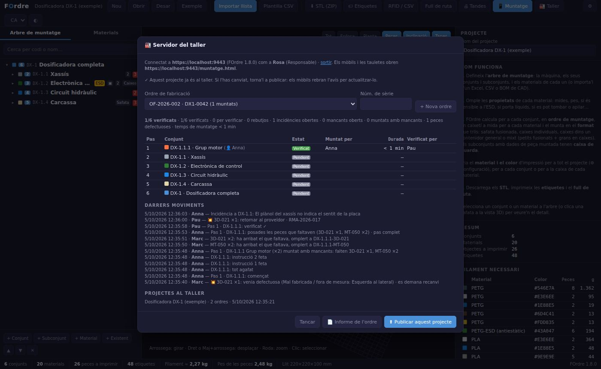
Si modifiques el projecte, torna'l a publicar: els mòbils rebran l'avís per actualitzar-lo (el punt de l'estat es converteix en ⟳).
Sense servidor
Prem 📱 Muntatge. Pots passar el projecte d'aquestes maneres:
.fordre.json (a l'app: menú ⋮ › Obrir fitxer de projecte).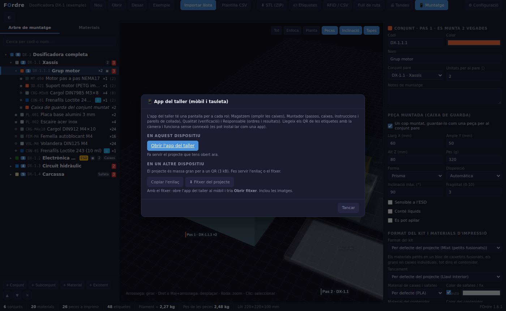
https://<servidor>:8443/muntatge.html, o l'accés directe del teu rol).| Tria el nom | Escriu el PIN |
|---|---|
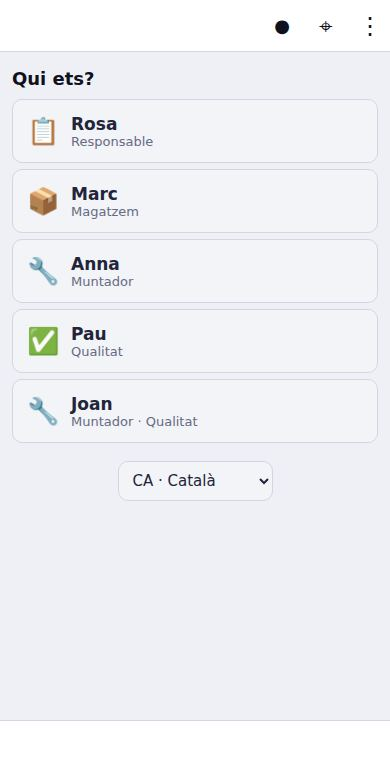 | 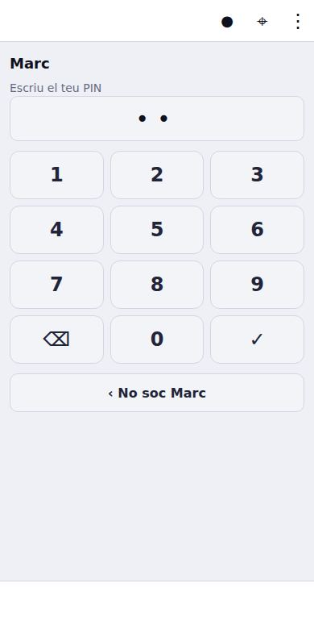 |
La capçalera, d'esquerra a dreta:
OF-2026-002): toca'l per canviar d'ordre. Si surt 🔒, l'ordre està tancada.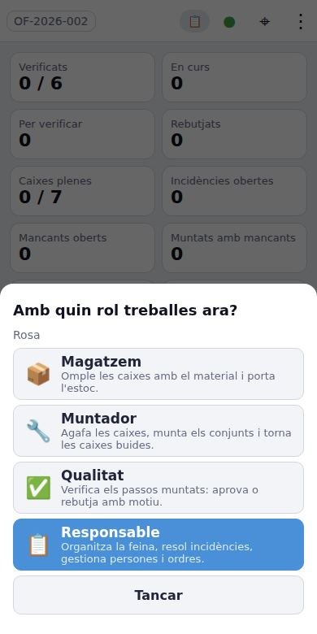
A la part de baix hi ha les pestanyes del teu rol. El número entre parèntesis indica quantes coses hi ha pendents (mancants, incidències, defectes).
Crear una ordre de fabricació. Pestanya Ordres:
OF-2026-002); el pots canviar.DX1-0042) i unes notes (per exemple, Client: Laboratoris Vallès).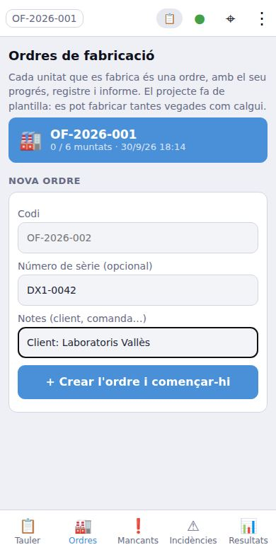
Un aparell que entra per primer cop es posa a l'ordre més recent; després, cada aparell recorda l'última ordre on ha treballat. Per canviar d'ordre, toca el codi a la capçalera.
Assignar passos. Al Tauler, a cada pas, tria la persona a Assignat a. El muntador el veurà marcat amb 👤 i el botó Continuar li proposarà primer els seus.
Pestanya Omplir. Mostra les caixes de l'ordre per pas, amb el seu estat: Buida, Omplint-se, Plena, Amb mancants, En ús o Retornada.
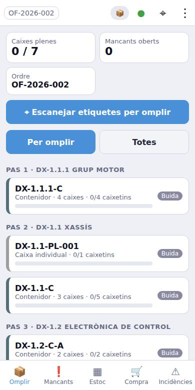
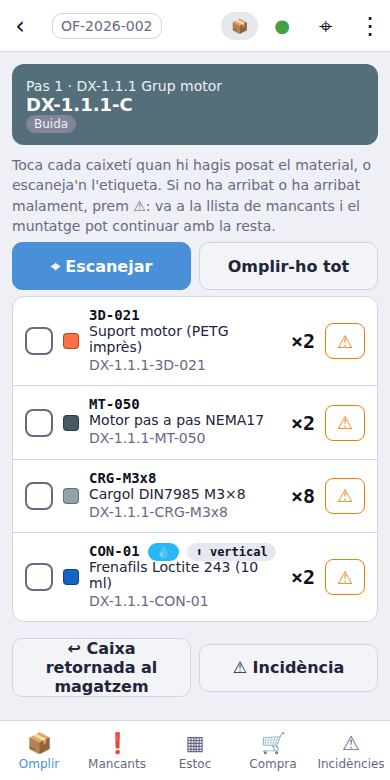
Quan hi ha un problema amb un material: botó ⚠
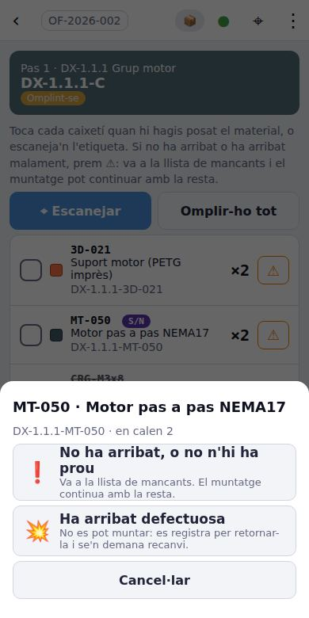
Quan arriba el material que faltava: escaneja l'etiqueta del caixetí (o toca'l i confirma Ha arribat). El caixetí es completa, el mancant es tanca sol i el muntador ho veurà.
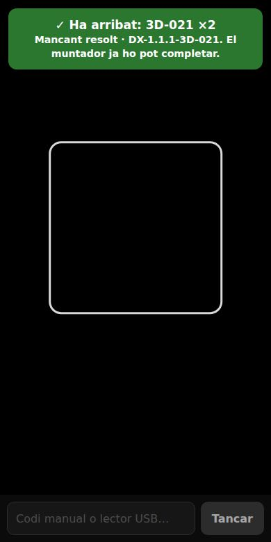
Pestanya Mancants. Tot el que falta, agrupat per material: quants, per a quin pas i caixa, des de quan, proveïdor i nota. Botons Copiar, Compartir i ⬇ CSV per enviar-ho a compres. Hi ha també l'accés a les peces defectuoses i a les devolucions.
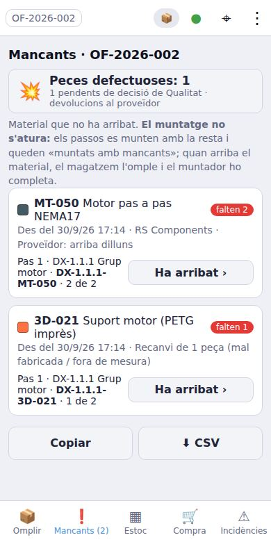
Pestanya Estoc. Cal és el que encara falta posar a les caixes; Tinc és l'estoc. Els botons − i + hi sumen o en resten una unitat, i escriure un número fa un recompte.
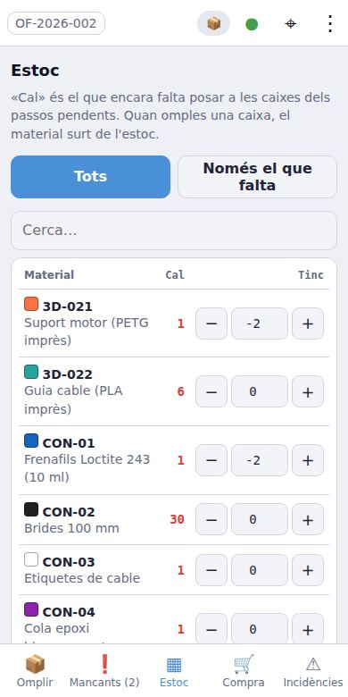
Pestanya Compra. El que s'ha de comprar per acabar l'ordre, agrupat per proveïdor. Els mancants surten marcats com a ❗ urgents.
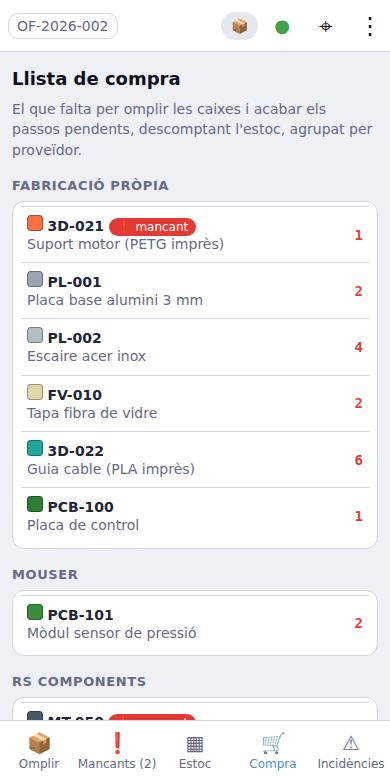
Tornar les caixes. Quan una caixa torna buida i neta al magatzem, obre-la i prem ↩ Caixa retornada al magatzem. També ho pot fer el muntador.
Pestanya Passos. Els passos en ordre de muntatge, amb el seu estat. Un pas queda bloquejat fins que els seus subconjunts estan muntats (encara que sigui amb mancants). Continuar porta al següent que et toca.
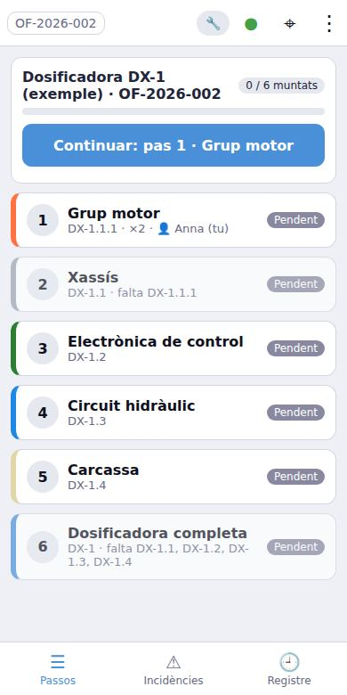
Dins d'un pas, de dalt a baix:
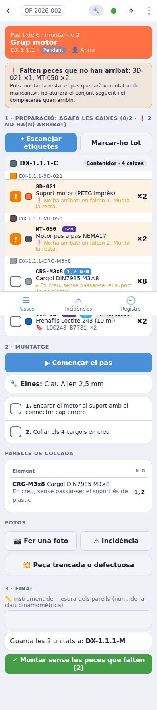
Muntar amb mancants. Si falta alguna peça, el botó diu ✓ Muntar sense les peces que falten. El pas queda «Muntat amb mancants» i no bloqueja el conjunt següent: es pot continuar amb la resta de la màquina. Quan arriba el material, el pas diu «Ja han arribat…» i el botó ✓ Completar queda actiu.
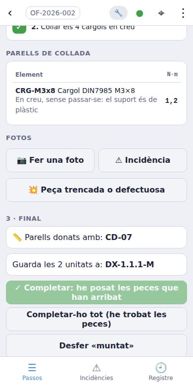
Completar-ho tot (he trobat les peces) serveix quan les peces que faltaven s'han trobat per un altre camí. L'app demana confirmació.
Desfer «muntat» torna el pas a l'estat anterior (per exemple, si t'has equivocat de pas). No es pot fer si Qualitat ja l'ha verificat.
Pestanya Verificar. Els passos es mostren en quatre grups:
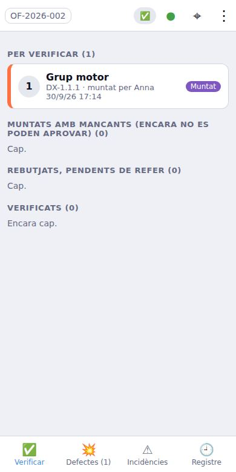
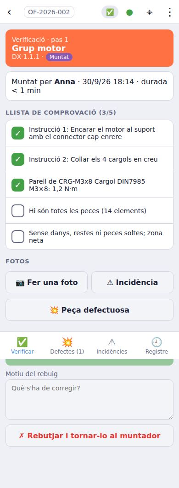
Una peça pot arribar malament (la detecta el Magatzem, amb el botó ⚠ del caixetí) o trencar-se o fer-se malbé en muntar (el Muntador o Qualitat, amb 💥 Peça trencada o defectuosa).
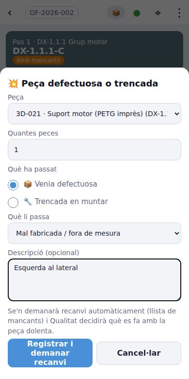
Què passa a continuació:
Qualitat decideix què es fa amb la peça dolenta. Pestanya 💥 Defectes:
| Decisió | Quan |
|---|---|
| ↩ Retornar al proveïdor | Venia defectuosa. A la nota, el número de devolució (per exemple, RMA-2026-017). |
| 🗑 Ferralla | No té arreglo. |
| 🛠 Reparar / recuperar | Es pot arreglar. |
| ✓ Acceptar tal com està | Es pot fer servir igualment. Si la tornes a posar a la caixa, el Magatzem ha de prémer Ha arribat per tancar el recanvi. |
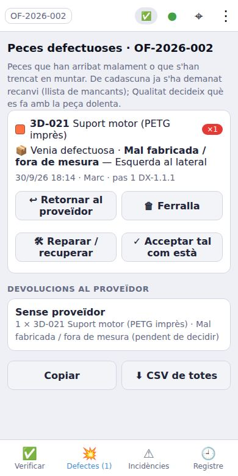
A sota hi ha la llista de devolucions per proveïdor, amb els botons Copiar, Compartir i ⬇ CSV per enviar-la.
Qualsevol persona pot obrir una incidència des de la pestanya Incidències, o amb el botó ⚠ Incidència d'un pas o d'una caixa:
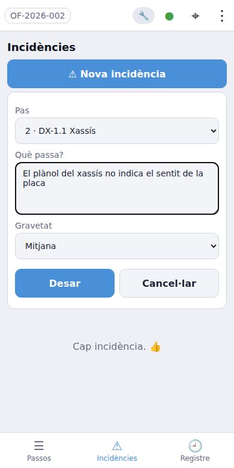
Qualitat i el Responsable la marquen com a resolta, amb una explicació.
Tauler. L'estat de l'ordre d'un cop d'ull:
Botons: 👥 Persones, 📊 Resultats, 💥 Defectes i 🔒 Tancar l'ordre.
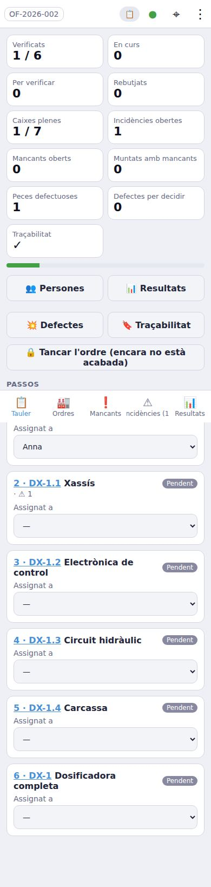
Resultats. Els indicadors de l'ordre:
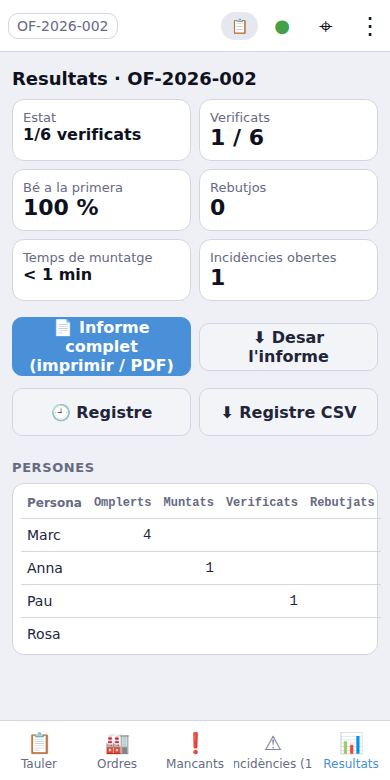
📄 Informe complet obre l'informe de l'ordre, llest per imprimir o desar en PDF (al diàleg d'imprimir, tria Desa com a PDF). Porta:
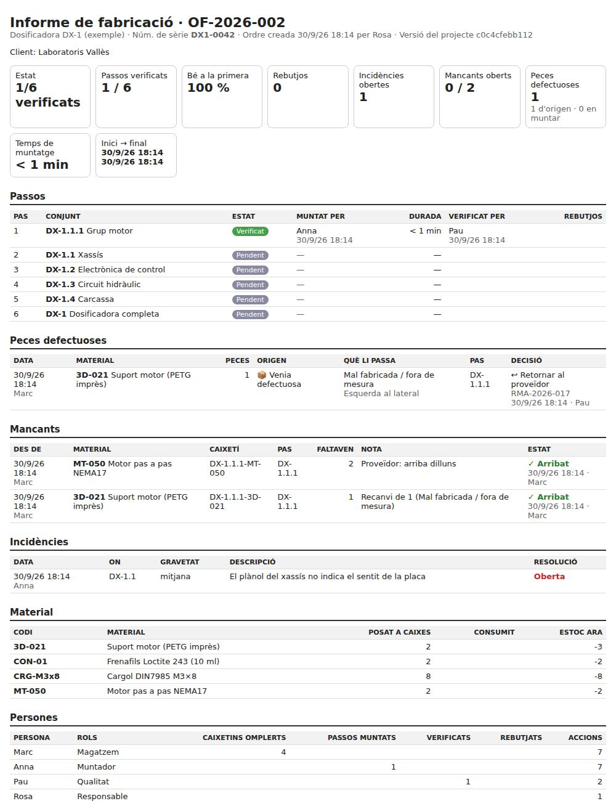
Tancar l'ordre. Al Tauler, 🔒 Tancar l'ordre. Si queden passos per verificar, mancants o defectes per decidir, l'app ho avisa abans. Una ordre tancada només es pot consultar. Si cal, es pot 🔓 Reobrir.
Fabricar una altra unitat. Crea una ordre nova (punt 6.2). El projecte és el mateix; el progrés comença de zero.
Si un aparell perd la Wi-Fi, el punt de la capçalera es posa 🔴 i l'app continua funcionant:
La norma ISO 9001 (apartat 8.5.2) demana poder identificar el producte i, quan cal, saber quines peces concretes porta cada unitat fabricada. FOrdre ho fa així:
1. Decidir quins materials són traçables. Al configurador, a la fitxa de cada material, el camp Traçabilitat (ISO 9001):
| Opció | Quan triar-la | Exemple |
|---|---|---|
| No cal | Cargoleria comuna, consumibles sense lot. | Cargols M3, brides. |
| Per lot | Peces o productes que el proveïdor identifica per partides. | Frenafils, olis, mànegues, plaques d'una mateixa fornada. |
| Per número de sèrie | Peces amb un número únic cadascuna. | Motors, plaques electròniques, sensors. |
També es pot posar a la llista de materials, amb la columna tracabilitat (punt 4.1).
2. El Magatzem anota el lot o els números de sèrie en omplir. En tocar (o escanejar) el caixetí d'un material traçable s'obre aquest formulari:
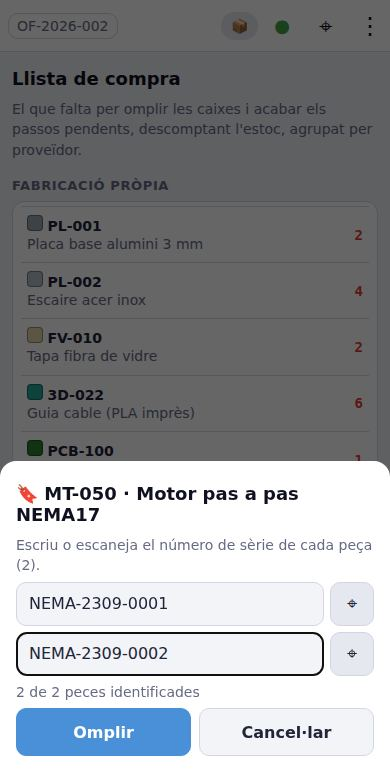
3. Mancants i peces defectuoses. Si en arriben menys, només s'anoten les que es posen; quan arriba la resta, el formulari surt amb els números que ja hi ha i els camps nous buits. Si una peça és defectuosa, el formulari de peça defectuosa demana quin número de sèrie o lot és: surt de la caixa i queda a la llista de devolucions amb la seva identificació.
4. El Muntador. Al pas veu els lots i números de sèrie de cada caixetí. Si alguna peça traçable no ha passat pel magatzem, l'app li demana el lot o el número de sèrie abans de marcar el pas com a muntat. Si el pas té parells de collada, cal escriure l'instrument de mesura amb què s'han donat (per exemple, el número de la clau dinamomètrica, CD-07). L'aparell el recorda per a la propera vegada.
5. Qualitat. A la verificació hi ha l'apartat 🔖 Traçabilitat amb els lots i números de sèrie i l'instrument de mesura, i un punt més a la llista de comprovació: els lots i números de sèrie anotats coincideixen amb les peces muntades. No es pot aprovar un pas amb peces traçables sense identificar (Qualitat les pot anotar amb 🔖 Anotar).
6. La pantalla 🔖 Traçabilitat (pestanya de Qualitat; per al Responsable, botó al Tauler):
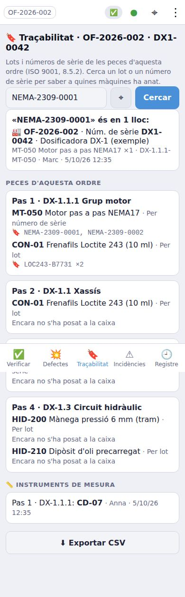
7. L'informe de l'ordre porta la secció Traçabilitat de components (ISO 9001 · 8.5.2) i l'indicador Traçabilitat (✓ completa o quantes en falten). En tancar l'ordre, l'app avisa si hi ha peces sense identificar.
muntatge.html i toca Projecte d'exemple, o obre el fitxer .fordre.json del configurador (menú ⋮ › Obrir fitxer de projecte).En Marc omple el contenidor del Grup motor. Els motors NEMA17 no han arribat.
DX-1.1.1-C, al caixetí MT-050, prem ⚠ › No ha arribat › Quants n'has pogut posar? 0 › nota Proveïdor: arriba dilluns. Omple la resta amb Omplir-ho tot.MT-050. L'app diu «Ha arribat · Mancant resolt».Un dels suports impresos 3D-021 arriba esquerdat.
3D-021 › ⚠ › Ha arribat defectuosa › 1 peça › Venia defectuosa › Mal fabricada / fora de mesura › descripció «Esquerda al lateral» › Registrar i demanar recanvi.En collar, a l'Anna se li passa la rosca de 2 cargols M3×8.
CRG-M3x8 › 2 › Trencada en muntar › Trencada › «Rosca passada en collar» › Registrar i demanar recanvi.Menú ⋮ › 👤 Canviar de persona. Si hi ha canvis sense enviar, l'app ho avisa. Els canvis de cada persona s'envien amb el seu nom encara que ja hagi entrat una altra.
Rosa: Tauler › Persones › la persona › Donar de baixa. Les seves sessions es tanquen a tots els aparells.
En Marc prefereix treballar en castellà, l'Anna en català i un tècnic de manteniment extern, en anglès.
&lang=es, &lang=ca o &lang=en.El proveïdor de frenafils avisa que el lot LOC243-B7731 no compleix l'especificació.
LOC243-B7731 › Cercar.| Què passa | Per què | Què fer |
|---|---|---|
| El mòbil no obre l'app del servidor. | No és a la mateixa Wi-Fi, o l'adreça no és correcta. | Connecta'l a la Wi-Fi del taller i obre l'adreça que mostra el servidor (o escaneja el QR). |
| Surt un avís de seguretat del navegador. | El certificat del taller no està instal·lat. | Instal·la'l (punt 2.7) o accepta l'avís (Configuració avançada › Continua). |
| Tot anava bé i de cop surt l'avís de seguretat a tots els mòbils. | El servidor ha canviat d'IP i ha fet un certificat nou. | Instal·la el certificat nou a cada aparell i dona una IP fixa al servidor (punt 2.4, pas 5). |
| L'escàner diu «No es pot obrir la càmera». | Falta el permís de càmera, o no és una connexió segura. | Dona permís de càmera al navegador. Obre l'app per https, no per http ni amb doble clic. |
| L'escàner no llegeix el QR. | Poca llum, massa a prop o etiqueta petita. | Allunya't una mica, dona més llum, o escriu el codi a mà a la barra de sota. |
| «Etiqueta d'un altre projecte o d'una versió anterior». | L'etiqueta és d'una versió anterior del projecte. | Torna a imprimir les etiquetes des del configurador. |
| «Nom o PIN incorrectes». | PIN equivocat. | Torna-ho a provar. Després de 5 errors cal esperar un minut. El Responsable pot canviar el PIN. |
| «El teu rol no permet aquesta acció». | La persona no té el rol necessari. | El Responsable li afegeix el rol (Persones). |
| «No pots verificar un pas que has muntat tu». | Regla dels quatre ulls. | Que el verifiqui una altra persona de Qualitat. |
| «Hi falten peces: no es pot aprovar». | El pas està muntat amb mancants. | El muntador l'ha de completar quan arribin les peces. |
| El punt de la capçalera està 🟠 o 🔴 molta estona. | El servidor no respon o l'aparell no té Wi-Fi. | Comprova la Wi-Fi i el servidor (sudo systemctl status fordre). Els canvis no es perden. |
| «Aquest projecte no és al servidor». | S'ha obert un projecte que no s'ha publicat. | El Responsable l'ha de publicar (🏭 Taller › Publicar). |
| El servidor no arrenca: «No es pot obrir el port 8443». | Hi ha un altre programa al port. | Atura l'altre programa o canvia el port (--port 9443). |
| El configurador mostra una caixa amb un avís «sobresurt». | La peça és més alta que el caixetí. | Revisa les mides del material, puja la Fondària màxima o fes servir tapa (la tapa porta un marc més alt). |
| Les safates són massa grans per a la impressora. | La mida del llit no és la correcta. | ⚙ Configuració › Impressora › Llit X / Llit Y. |
| Les tapes a pressió van massa justes o massa fluixes. | El joc no està calibrat. | Imprimeix la peça de calibratge (punt 3.2). |
| «Número de sèrie repetit» o «ja s'ha fet servir en aquesta ordre». | Aquest número de sèrie ja és en un altre caixetí de l'ordre. | Comprova l'etiqueta de la peça. Si estava mal anotat, corregeix-lo amb el botó 🔖 del caixetí on és. |
| «Els lots o números de sèrie han de sumar N peces». | El total no coincideix amb les peces que es posen. | Revisa les quantitats de cada lot, o afegeix o treu files. |
| No deixa marcar el pas com a muntat: demana l'instrument de mesura. | El pas té parells de collada. | Escriu el número de la clau dinamomètrica (o l'instrument) que has fet servir. |
| No deixa aprovar: «Falta el lot o el número de sèrie d'algunes peces». | Hi ha peces traçables sense identificar. | Prem 🔖 Anotar i escriu-los, o demana-ho al Magatzem. |
| L'app surt en un idioma que no és el teu. | S'ha agafat l'idioma del navegador. | Menú ⋮ › Idioma (al configurador, el selector CA / ES / EN). L'aparell el recordarà. |
Estats d'un pas
| Estat | Vol dir |
|---|---|
| Pendent | Encara no es pot començar o no s'ha començat. |
| Preparat | Els subconjunts estan muntats i les caixes plenes. |
| En curs | S'ha començat a muntar. |
| Muntat amb mancants | Muntat, però hi falten peces que no han arribat o s'han trencat. No bloqueja el pas següent. |
| Muntat | Complet i pendent de verificar. |
| Rebutjat | Qualitat l'ha rebutjat, i torna al muntador. |
| Verificat | Qualitat l'ha aprovat. |
Estats d'una caixa
| Estat | Vol dir |
|---|---|
| Buida | No s'hi ha posat res. |
| Omplint-se | S'hi ha posat una part del material. |
| Amb mancants | Hi falta material que no ha arribat. |
| Plena | Tots els caixetins estan plens. |
| En ús | El muntador ha agafat tots els caixetins. |
| Retornada | Ha tornat buida al magatzem. |
| Acció | 📦 Magatzem | 🔧 Muntador | ✅ Qualitat | 📋 Responsable |
|---|---|---|---|---|
| Omplir i buidar caixes, estoc | ✓ | ✓ | ||
| Marcar un mancant | ✓ | ✓ | ||
| Registrar una peça defectuosa o trencada | ✓ | ✓ | ✓ | ✓ |
| Agafar caixes, començar, muntar, completar | ✓ | ✓ | ||
| Tornar caixes | ✓ | ✓ | ✓ | |
| Verificar (aprovar o rebutjar) | ✓ | ✓ | ||
| Decidir què es fa amb una peça defectuosa | ✓ | ✓ | ||
| Resoldre incidències | ✓ | ✓ | ||
| Anotar o corregir lots i números de sèrie | ✓ | ✓ | ✓ | ✓ |
| Obrir incidències, fer fotos | ✓ | ✓ | ✓ | ✓ |
| Assignar passos, obrir i tancar ordres, persones, publicar | ✓ |
192.168.1.50)| Què | Adreça |
|---|---|
| Pàgina d'ajuda i certificat | http://192.168.1.50:8080 |
| App del taller | https://192.168.1.50:8443/muntatge.html |
| App del taller, per rol | https://192.168.1.50:8443/muntatge.html?rol=magatzem (o muntador, qualitat, responsable) |
| Configurador | https://192.168.1.50:8443/index.html |
| Configurador amb una llista d'exemple | https://192.168.1.50:8443/index.html?llista=exemples/plantilla_fordre.csv |
| Qualsevol de les anteriors en un altre idioma | Afegeix ?lang=es o ?lang=en (o &lang=… si ja hi ha un ?) |
| Tecla | Acció |
|---|---|
F | Enfocar la selecció a la vista 3D. |
Inici | Veure-ho tot. |
Supr | Eliminar la selecció. |
Esc | Tancar el diàleg obert. |
A l'app del taller, un lector de codis USB o Bluetooth funciona sense configurar res: escaneja i el codi es processa sol.
Aquesta taula ajuda a preparar l'auditoria: on es troba, a FOrdre, l'evidència de cada requisit relacionat amb la fabricació.
| Requisit ISO 9001 | Què hi aporta FOrdre | On es veu |
|---|---|---|
| 7.1.5 Recursos de seguiment i mesura | Cada pas amb parells de collada registra l'instrument de mesura que s'ha fet servir. | Pas › 3 · Final; verificació; informe; 🔖 Traçabilitat. |
| 7.5 Informació documentada | Registre de cada acció amb data, hora, persona i rol; informe de l'ordre en PDF; versió exacta del projecte de cada ordre; còpies de seguretat de les dades. | Registre; informe; punt 2.9. |
| 8.5.1 Control de la producció | Instruccions de muntatge, parells de collada, eines, imatge de referència, persones identificades amb PIN i rols. | Pas de muntatge; persones. |
| 8.5.2 Identificació i traçabilitat | Etiquetes amb QR i codi de barres a cada caixa i caixetí; estat de cada pas i caixa; número de sèrie de la màquina a l'ordre; lots i números de sèrie de cada peça; cerca inversa de lots. | Etiquetes; 🔖 Traçabilitat; informe. |
| 8.5.4 Preservació | Caixes a mida per a cada peça, peces ESD separades, líquids drets, caixes de guarda per als subconjunts. | Configurador. |
| 8.6 Alliberament dels productes | Verificació de cada pas per Qualitat amb llista de comprovació i regla dels quatre ulls; tancament de l'ordre. | Verificar; informe. |
| 8.7 Control de les sortides no conformes | Peces defectuoses amb el seu lot o número de sèrie i la decisió (retorn, ferralla, reparar, acceptar); rebutjos amb motiu; incidències. | 💥 Defectes; informe. |
| 9.1 Seguiment, mesura, anàlisi i avaluació | Indicadors de cada ordre: bé a la primera, rebutjos, temps de muntatge, mancants i defectes. | Resultats; informe. |
| 10.2 No conformitat i acció correctiva | Incidències amb gravetat i resolució. | Incidències; informe. |
Important: FOrdre aporta les evidències de la fabricació, però la certificació depèn de tot el sistema de gestió de l'empresa: procediments, calibratge periòdic dels instruments de mesura, auditories internes, revisió per la direcció, avaluació de proveïdors, accions correctives formals… Aquestes parts es gestionen fora de FOrdre.
.fordre.json. Llistes: .csv, .xlsx. Caixes: .stl, .3mf. Etiquetes RFID: .csv.muntatge.html, servidor/, dades/, exemples/…) no canvien amb l'idioma.LICENSE). Les llibreries de tercers (Three.js, qrcode-generator, SheetJS, jsQR) porten la seva pròpia llicència a vendor/llicencies/.